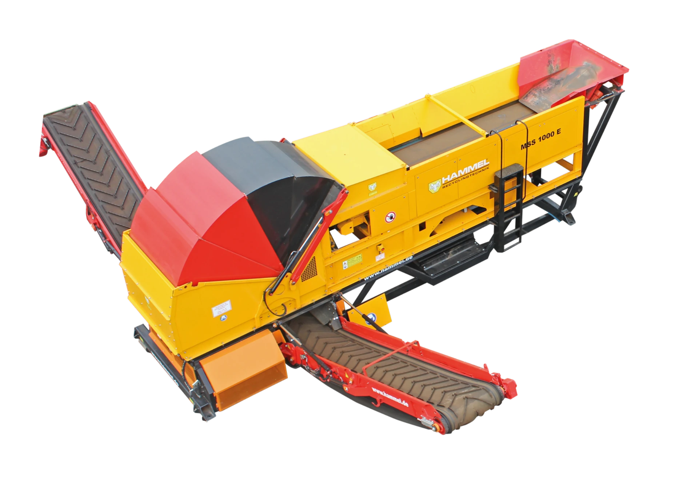

Leistungsstarke Zerkleinerungs- und Recyclingtechnik für Holz, Abfall, Metall und anspruchsvolle Sonderanwendungen
DAS ORIGINAL
SEIT 1996
HAMMEL entwickelt und produziert aus Bad Salzungen heraus und produziert leistungsstarke Recyclingtechnik. Seit 1996 stehen robuste Konstruktionen, technische Erfahrung und Lösungen für anspruchsvolle Materialien im Mittelpunkt.
UNSERE GESCHICHTEUNSERE MASCHINEN

VB 950 DK
Leistungsstarke Vorzerkleinerung

NZS 1000 DK
Für ein gleichmäßiges Endprodukt

MSS 1000 E
Sortiertechnik für die Aufbereitung von Wertstoffen

HAMMEL ANLAGENBAU
Integrierte Lösungen für Recyclingprozesse
WAS WIR ZERKLEINERN
Schrottverarbeitung
Zerkleinern, Sortieren und Aufbereiten von Metallen mit robuster HAMMEL Anlagentechnik.
LÖSUNGEN ENTDECKENAltholz & Grünabfälle
Maschinenkonzepte für Biomasse, Kompostierung, Siebung und Vorzerkleinerung.
LÖSUNGEN ENTDECKENGewerbe-, Industrie- & Hausmüll
Anlagen für gemischte Stoffströme mit Fokus auf Durchsatz und Betriebssicherheit.
LÖSUNGEN ENTDECKENBauschutt
Mobile und stationäre Lösungen für mineralische Materialien und Baustellenabfälle.
Gummi-/Kunststoff & Kunststoffabfälle
Aufbereitungslinien für Kunststoffe, Ersatzbrennstoffe und anspruchsvolle Fraktionen.
LÖSUNGEN ENTDECKEN
ENTWICKELT
FÜR HÖCHSTLEISTUNG
Robuste Technik, durchdachte Konstruktionen und jahrzehntelange Erfahrung. Wir entwickeln Maschinen für die anspruchsvollen Aufgaben der industriellen Zerkleinerung.
MEHR ÜBER HAMMELGEMEINSAM MEHR BEWEGEN
Sie haben eine Herausforderung? Wir finden gemeinsam die passende Lösung
JETZT KONTAKT AUFNEHMEN